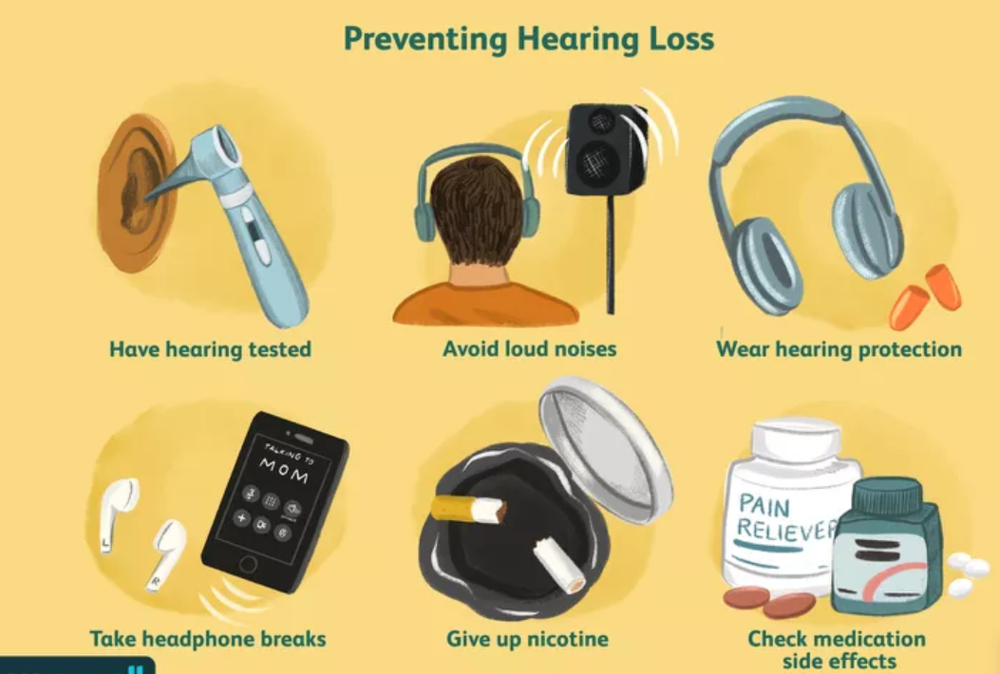

Noise Induced Hearing Loss
NIHL Prevention & Treatments Page
Since NIHL cannot currently be reversed, finding ways to prevent it from happening in the first place is important.
Here are some general suggestions on how to mitigate NIHL:
- Wear cotton ear plugs or other forms of hearing protection when attending or participating in loud activities. There are plenty of earplugs that are designed to reduce the harm caused to a person's ears while also maintaining the authentic experience of a concert, if that is a concern.
- Try to stay away from areas that produce loud noise and move away from the source of loud noises if one appears nearby. This is especially crucial for people who don't have a way to protect their hearing via earplugs or another method.
- There is technology that tracks the decibal level (in other words, how loud it is) of certain locations. It is important to keep track of the noise levels in order to monitor when to appropriately deploy hearing protection.

Credit: verywellhealth.com
In terms of treatment for NIHL and hearing loss in general, hearing aids are the top solution. Hearing aids are electronic devices that essentially capture incoming sounds and make them louder for the person wearing them so that they can hear better. It should be kept in mind that these devices do not reverse the damage. It is also possible for NIHL to get worse over time, making the hearing aids less effective. In that case, another option is a cochlear implant. It is important to have discussions with a medical professional in order to become fully informed before going forward with an implant.